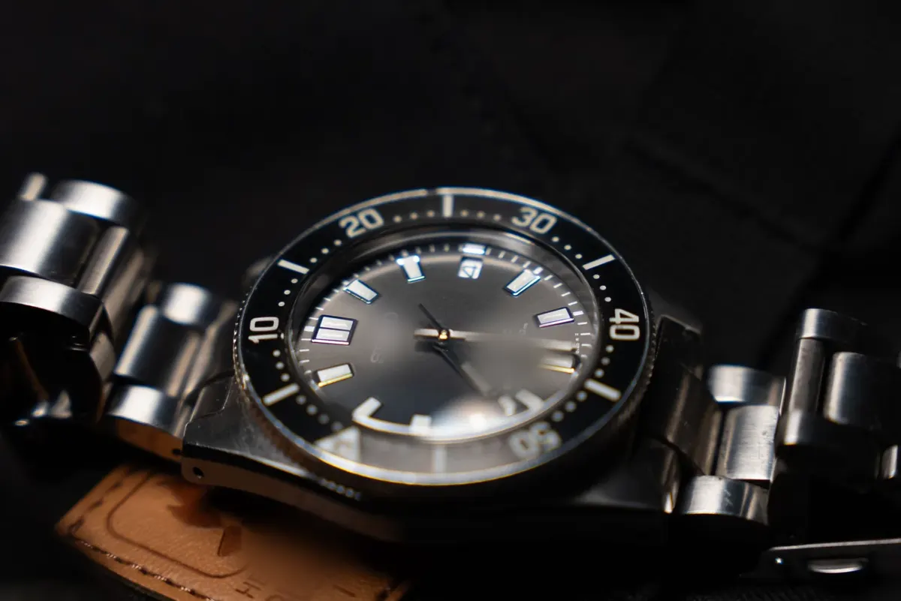
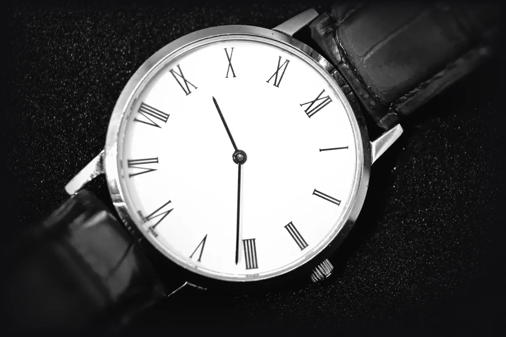
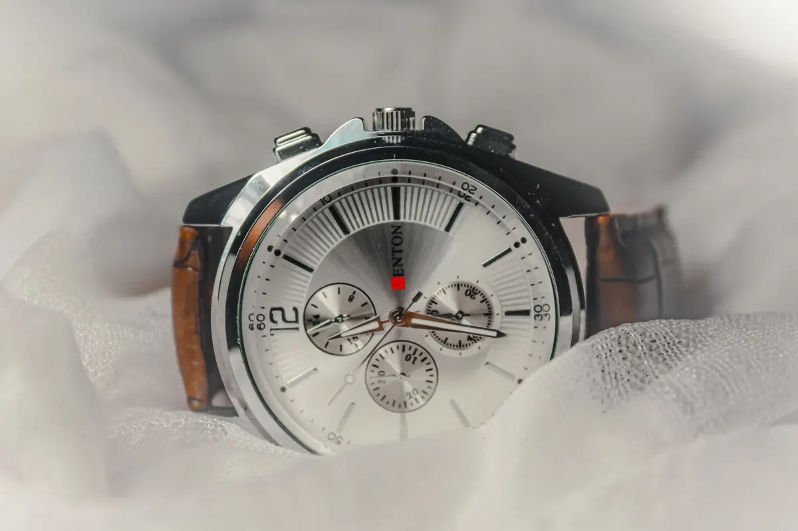
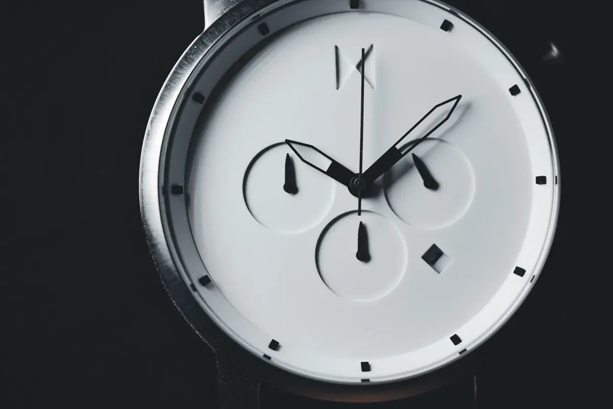

DIVER — 潮
TIDE 200
潮が引くまで、針は正確だった。
- MOV
- 自動巻 28,800振動/時
- W.R.
- 200m（ISO 6425）
- CASE
- 41mm / SUS316L
- PRICE
- ¥238,000
FIVE WATCHES, ONE LABEL
系統ごとに、今季の一本だけ。
3秒に一本ずつ、ご覧に入れます。

DIVER — 潮
潮が引くまで、針は正確だった。

DRESS — 夜会
袖口に、7ミリの静けさを。

CHRONOGRAPH — 計測
1/8秒のためらいも、記録になる。
PILOT GMT — 子午線
東京の夜と、リスボンの朝を同じ手首に。

MINIMAL — 白
読むのに1秒。飽きるには、一生。
CREDO
WORCEは季節ごとに、5つの系統から一本ずつだけを選び直すレーベルです。選定基準は3つ——道具としての根拠、10年後の修理性、そして袖口で言い訳をしないこと。
店主の物語は語りません。語るべきことは、すべて針が刻んでいます。
ON THE WRIST
羽田第2ターミナル。MERIDIANの24時間針は、まだリスボンの夜を指している。
磯の岩場、波が引いた8分間。TIDEのベゼルを回して、戻りの時刻を仕込む。
授賞式の控室。SOIRは袖口から2ミリだけ顔を出して、それ以上は語らない。
SPECIFICATIONS
| MODEL | MOVEMENT | W.R. | CASE | RESERVE | PRICE |
|---|---|---|---|---|---|
| TIDE 200 | 自動巻 28,800 | 200m | 41mm 316L | 70h | ¥238,000 |
| SOIR 38 | 手巻き 21,600 | 30m | 38mm / 7.2mm厚 | 46h | ¥186,000 |
| LAP 41 | 自動巻クロノ | 100m | 41mm タキメーター | 60h | ¥398,000 |
| MERIDIAN 24 | 自動巻GMT | 100m | 40mm 耐磁 | 70h | ¥276,000 |
| BLANC 36 | クォーツ | 50m | 36mm / 6.8mm厚 | 電池3年 | ¥98,000 |
価格はすべて税込。機械式の日差は実測値を納品書に記載します。
AFTER CARE